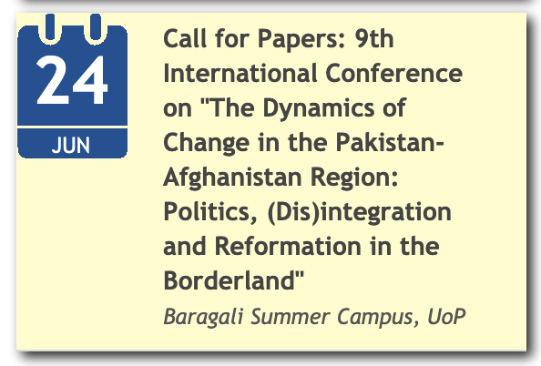
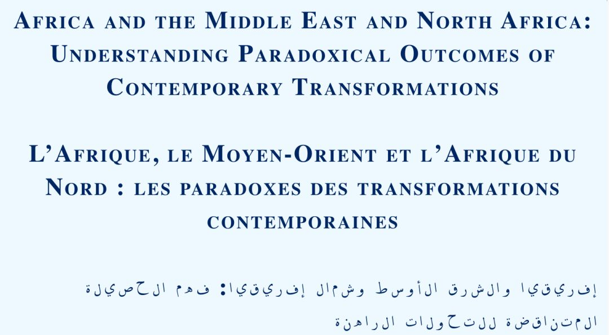
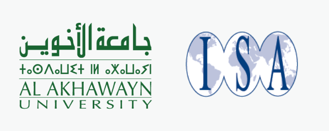

收录于合集 #国际会议 9个

人权与外交政策—第七届联合人权会议
【主题】
人权与外交政策—第七届联合人权会议
Human Rights and Foreign Policy—7th Joint Human Rights Conference
【时间 】
2020年6月22日9:00—2020年6月24日17:00
【截止日期】
投稿已截止，注册时间截止至2020年6月14日（5月25日前注册有价格优惠）
【联系方式 】
Olga Jimenez
020 7862 8871
简介
鉴于地缘政治力量的重新平衡、某些方面对人权的挑战以及国际社会对人权的支持日益减少，我们迫切需要对人权在外交政策中的作用进行研究。为使人权在国际上蓬勃发展，各国不仅需要在国内，而且需要在双边与多边关系的外交政策中支持人权。然而，实践中仍然存在很大的分歧。在传统人权支持者的政策中明显的挑战显现出来。这包括特朗普政府在多个方面的行动，以及欧洲国家和欧盟作为整体的行动。例如，欧洲的难民政策严重威胁到基本的国际准则。而英国支持沙特阿拉伯，即便沙特在也门发动了一场血腥的战争，这也凸显了它的虚伪。
然而传统上，某些中等强国在国际上是人权的支持者，并将人权明确纳入其外交政策中；发展中世界的新兴国家则代表着更加多样化的行为主体以及对人权和国际机构的看法，这在为新型参与提供机会的同时，也带来了重大挑战。
关于人权和外交政策的大部分工作都特别集中在一个国家——美国——尽管对欧盟的关注越来越多，而且显然有必要进行更广泛的调查和分析，但基础广泛的比较研究很少。因此，会议的一个首要问题是：在2020年，外交政策对人权的支持会是怎样的？会议期间可能讨论的问题包括：
· 国际上传统的人权支持者是否正在改变他们的支持？ · 新的地区和全球力量的出现提供了哪些机遇和挑战？ ·
推动国家支持（或不支持）国际人权的内部和外部进程是什么？ · 哪些理论方法最能解释人权外交政策？ ·
物质和观念因素如何影响和塑造人权外交政策？ · 新兴大国在国际上推动（或限制）人权方面发挥什么作用，以及他们的立场有何异同？ ·
我们如何定位像欧盟或非洲联盟这样在国际上具有一些类似国家的特征——或者至少有这样的雄心的国际组织行为体？ ·
次国家政治行为体在国际上支持人权的方面可以发挥什么作用？ · 跨国民间社会网络如何影响国家的人权外交政策？ ·
国家的双边和多边人权政策之间是否存在差异？ · 我们能否识别与人权有关的外交政策的实证研究的最新水平？
会议官网与注册信息，请前往https://hrc.sas.ac.uk/events/event/22122。会议议程请见“阅读原文”。（阅读原文提取密码为pzqr）
巴基斯坦-阿富汗地区的变化动态

【主题】
巴基斯坦-阿富汗地区的变化动态：边界地区的政治、（非）一体化与改革（第九届国际会议）
9th International Conference on “The Dynamics of Change in the Pakistan- Afghanistan Region: Politics, (Dis)integration and Reformation in the Borderland”
【时间 】
2020年6月24日-2020年6月26日
【地点】
巴基斯坦，白沙瓦大学
【截止日期 】
摘要应在2020年4月10日之前提交
【联系方式】
polsci.intconf@uop.edu.pknoreen_naseer@uop.edu.pk
简介
巴基斯坦-
阿富汗地区由不同的空间现实定义，受制于区域和国际利益相关者的各种入侵、复杂的竞争和激烈的权力角逐。这导致使冲突成为该地区的永久特征。多年来，由冲突驱动的干预措施（重新）定义并（重新）划定了边界，并给该地区带来了新的政治空间，同时使该地区向“现代国家”概念开放。但是，分级边界管理的殖民实践使边界划定和边境管理的过程变得复杂。结果就是，对“外围边界空间”的集中控制的扩展为之增加了复杂性。分级边界管理的殖民实践还否认了这些地区的发展利益，并为他们赢得了“不受限制/荒野的边境”和“不受管制的空间”的称号。随着新的激进的意识形态运动的出现，边境地区的局势变得更加微妙。随着激进的宗教政治运动对和平与安全的挑战遭到军事行动的打击，该地区被迫陷入暴力、战争、人口流离失所，并因此削弱了传统结构和机构的力量。
边境地区空间现实的另一个特征是私人和公共场所中存在强烈的性别隔离，这通过使公共场所对部落妇女来说过于“特权”，从而加强了男性在政治、宗教和经济上的统治地位。然而，这些更乐意向男性声音开放并吸纳它们的公共空间，被该地区的居民用来表达他们的意见、不满和政治异议；包括社交媒体空间在内。
在巴基斯坦边界上，国家通过将联邦直辖部落地区（FATA）与开伯尔·普赫图赫瓦省（the province of Khyber
Pakhtunkhwa）合并来引入改革进程，这不仅给在宪法、法律和政治上融入更大的巴基斯坦政体带来新的挑战，而且催生了权力共享和制度建设的新范式。然而，以边界清晰可见的堡垒和栅栏的形式重新出现的政治化的边界划界，对于一个不习惯于这种“硬边界”的地区构成了重大挑战，从而对边疆的社会结构产生了进一步的影响。根据美国与阿富汗塔利班签署的新和平协议，重要的是评估在不久的将来预计会发生的变化，特别是因为喀布尔建国进程的脆弱性表明了阿富汗治理的脆弱本质。
传统上，边疆地区保持着结构化秩序的外表，并通过本土和地方化的治理机构为普什图人（Pakhtun）和非普什图人同等地组织生计。几百年来，不成文的行为守则在边境地区管理普什图人部落的社会生活，而支尔格大会（理事会）（Jirga（council））作为解决争端的非正式社区机构在分配司法相关职能方面发挥了作用。但是，这种传统的社会和政治空间一直受到挑战。对于学术研究来说，该地区社会文化环境的活力是经常被忽视的主题。非正式的治理机构与正式的国家机构互动并在其中发挥作用。因此，这种正式和非正式的动态相互作用正在自相矛盾地促进和同时阻碍该区域的国家建设进程。新合并部落地区（NMTDs）的主流化是该地区新的挑战。
为了更全面地了解巴基斯坦-阿富汗地区的变化动态，自2011年以来，白沙瓦大学政治学系和巴基斯坦汉斯·赛德尔基金会（Hanns Seidel
Foundation
Pakistan）联合组织了一系列国际会议。汉斯·赛德尔基金会欢迎2020年6月在开伯尔·普赫图赫瓦省巴拉加利举行的第9届国际会议的提案。
2020年年会将探讨以下主要问题：1、哪些方法和知识来源可以帮助使处于边缘地位的当地人的声音和传统更易于理解、有意义和包罗广泛？2、是什么使巴基斯坦-
阿富汗边境地区成为社会政治复杂的边境地区？最近关于边境地区的学术研究以什么方式有助于了解巴基斯坦-
阿富汗边境地区的各种动态？3、该地区的国家建设进程如何发展？巴基斯坦和阿富汗的国家建设面临着哪些政治和经济挑战？4、我们这个时代面临的主要全球挑战与巴基斯坦-
阿富汗边境地区如何相互影响？5、随着该地区的社会文化和政治变革，性别关系正在以何种方式转变？6、在新自由主义的影响和冲突（以及冲突后）的动态下，地方经济如何变化？7、替代性宗教话语如何挑战巴基斯坦-
阿富汗地区的主流话语？8、针对极端主义声音/行动正在出现哪些社会话语模式？9、最近美国与塔利班之间签署了和平协议，这将在给这个饱受冲突困扰的边境地区带来令人渴望的和平方面取得怎样的成功？
有关领域的进一步划分大致如下：战争、流派与批判宗教、差异与暴力法律、人权与性别权利民主治理、公共空间与抵抗青年与激进主义经济转型与发展贸易与经济一体化全球化、冲突与地区经济移民、散居、难民和国内流离失所者边界与跨国流动民族主义外围中的外围？边界上的非普什图人身份政治艺术、体育和政治美学地方政府与治理联邦直辖部落地区（FATA）的治理改革：主流化和与开伯尔·普赫图赫瓦省（the
province of Khyber
Pakhtunkhwa）合并的挑战不断变化的选举/政治趋势边境理论的介入边境管理/边境管制中巴经济走廊（CPEC）–CPEC的经济红利/政治国家霸权与抵抗社交网络和政治动员：线上与线下权力竞赛、国家机构与治理空间和解和变化中的阿富汗地缘政治及其对该地区的影响发展叙事：捐助疲劳与可持续性问题联邦制–阿富汗治理问题的答案？阿富汗的和平建设–和平协定、成功与失败
我们要求学者和从业人员就上述任一主题提交不超过500字的论文摘要，以及简短的个人简介，应在2020年4月10日之前提交给会议组织委员会。摘要应包括标题、研究问题、有关潜在方法和理论框架的信息，以及对主要论点的总结。在对摘要进行审查之后，我们将与选定的会议发言者联系。提交完整论文的最后日期是2020年5月10日。
我们将为会议发言者提供住宿、饮食、旅行费用和当地交通。我们打算印刷会议记录，并可能将选定的论文编辑成书，之后会由著名的出版社出版。
有关更多详细信息或提交摘要，请联系：polsci.intconf@uop.edu.pk或noreen_naseer@uop.edu.pk
会议信息来源会议官网，更多信息请参见：http://www.uop.edu.pk/events/?q=526
国际研究协会（ISA）2020年伊夫兰（Ifrane）国际会议

【主题】
非洲、中东与北非：理解当代转型的矛盾结果
Africa and the Middle East and North Africa: Understanding Paradoxical Outcomes of Contemporary Transformations
【时间 】
2020年6月23日—2020年6月25日
【地点】
摩洛哥伊夫兰，阿卡韦恩大学
【截止日期 】
投稿已截止，注册时间截止至2020年4月15日
【联系方式】
会议信息来源参见ISA官网：https://www.isanet.org/Conferences/ISA-Ifrane-2020
具体会议议程，点击阅读原文即可下载。

国际研究协会（ISA）第61届年会取消声明
由于目前我们收到大量的电话和电子邮件，我们请求所有人对答复保持耐心，并考虑推迟几天再给ISA总部工作人员打电话和发送电子邮件。我们目前正在努力收集信息，并准备说明和常见问题解答，以在这种前所未有的情况下为您提供指导。我们将通过电子邮件与注册参与者进行交流，并且从3月16日（星期一）开始，我们将通过我们的会议网站定期更新并回答您的问题。ISA总部致力于尽快答复您的问题与关切。
信息来源：
https://www.isanet.org/Conferences/Honolulu-2020
【编辑】纪楷欣
【排版】赵怡雯